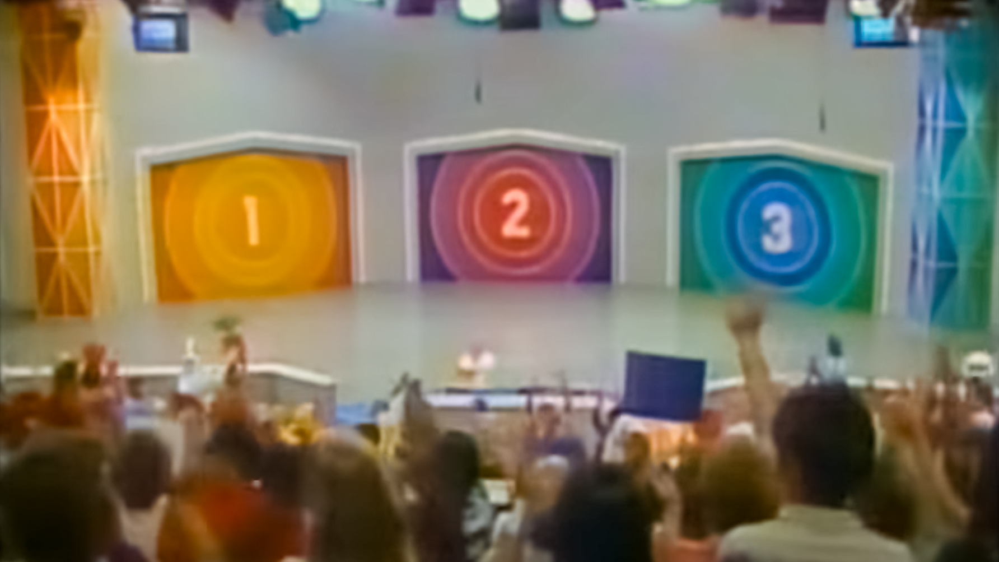
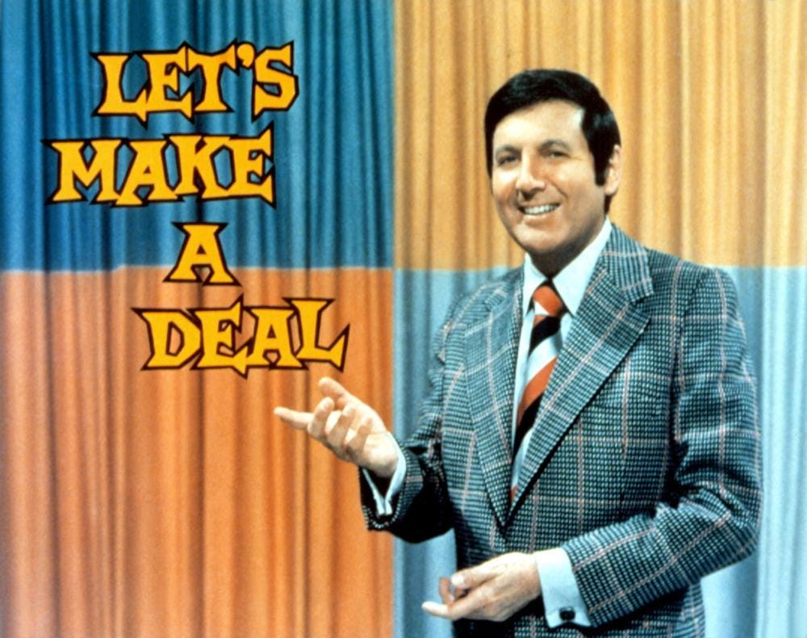

Logic:
\(E\), \(F\): Propositions that are either true or false
\(\bar{E}, \bar{F}\): Negations: the opposites of \(E\) and \(F\).
\(E \cup F\): \(E\) or \(F\) is true (includes both true)
\(E \cap F\): \(E\) and \(F\) are both true
\(E | F\): The truth of \(E\) if \(F\) is known to be true
Probability:
$ P(E) $: The probability that \(E\) is true
$ P(E | F)$: The probability that \(E\) is true, given that we know \(F\) is true
What does it mean to say that the probability of something has some value?
Frequentist statistical tests report confidence with a \(p\) value:
A clinical trial found that patients taking the experimental drug lived longer than patients taking a placebo, with \(p = 0.001\)
This means that if the drug doesn’t actually cause patients to live longer, if you repeated the clinical trial many times, about one time in 1000, purely by chance, the patients taking the drug would live longer than those who didn’t.
This doesn’t mean there’s 99.9% confidence that the drug works.
For Bayesians, probabilities are about knowledge. Every time you make a new measurement, you learn something, and update the probability to reflect the new state of your knowledge.
Suppose you begin life not knowing whether the sun will ever rise again, after it sets.
Let \(H\) be a hypothesis that is either true or false, and \(H_0\) is an alternate null hypothesis.
Let \(x\) be the evidence collected in an experiment
Frequentists consider likelihood: \(P(x | H_0)\): the probability that you’d see the evidence from the experiment if the null hypothesis were true
Bayesians consider \(P(H | x)\): the probability that the hypothesis is true, based on the evidence from the experiment.
Suppose there are \(N\) possible hypotheses, \(H_1\), \(H_2\), … \(H_N\).
Initially, you assign probabilities \(P(H_1)\), \(P(H_2)\), …, \(P(H_N)\).
You observe new data \(D\), and want to update your estimates of the probability for each hypothesis:
\[ P(H_i | x) = \frac{P(x | H_i) P(H_j)}{\sum_{j = 1}^N P(x | H_j) P(H_j)} \]
\[ P(H_i | x) = \frac{P(x | H_i) P(H_j)}{\sum_{j = 1}^N P(x | H_j) P(H_j)} \]
\[ \text{posterior} = \frac{\text{likelihood} \times \text{prior}}{\text{evidence}} \]


You know that he will never open the door with the car, so he’s not opening doors at random.
If the car is behind door 1, he could open doors 2 or 3 to reveal a goat so \(P(D | H_1) = 1/2\)
The car can’t be behind door 2, so \(P(D | H_2) = 0\)
If the car is behind door 3, he could only open door 2, so \(P(D | H_3) = 1\)
\[ \begin{aligned} P(H_1 | D) &= \frac{P(D | H_1) P(H_1)}{\sum_{i = 1}^3 P(D | H_i) P(H_i)} \\ &= \frac{1/2 \times 1/3}{1/2 \times 1/3 + 0 + 1 \times 1/3} \\ &= \frac{1/6}{1/6 + 1/3} = 1/3 \end{aligned} \]
So after door 2 is opened, there is a 1/3 chance the car is beind door 1, and 2/3 chance it’s behind door 3.
Tom Stoppard, Rosencrantz and Guildenstern Are Dead (1990)
Either it will flood, or it won’t, so use the or rule:
\[P(\text{flood at least once}) = 1 - P(\text{doesn't flood}).\]
And we can solve \(P(\text{doesn't flood})\) using the and rule:
\[ \small{ \begin{aligned} \text{Doesn't flood in 30 years} =~& \text{Doesn't flood this year} \cap \text{Doesn't flood next year} \cap {\text{}} \cdots \\ & \cdots \text{Doesn't flood 30 years from now} \end{aligned} } \]
so the probability of not flooding in the next 30 years is
\[ P(\text{doesn't flood in one year})^{30} = (1 - 0.01)^{30} = 0.99^{30} = 0.74 \]
And the probability of flooding at least once in 30 years is
\[ P(\text{floods}) = 1 - P(\text{doesn't flood}) = 1 - 0.74 = 0.26 \]